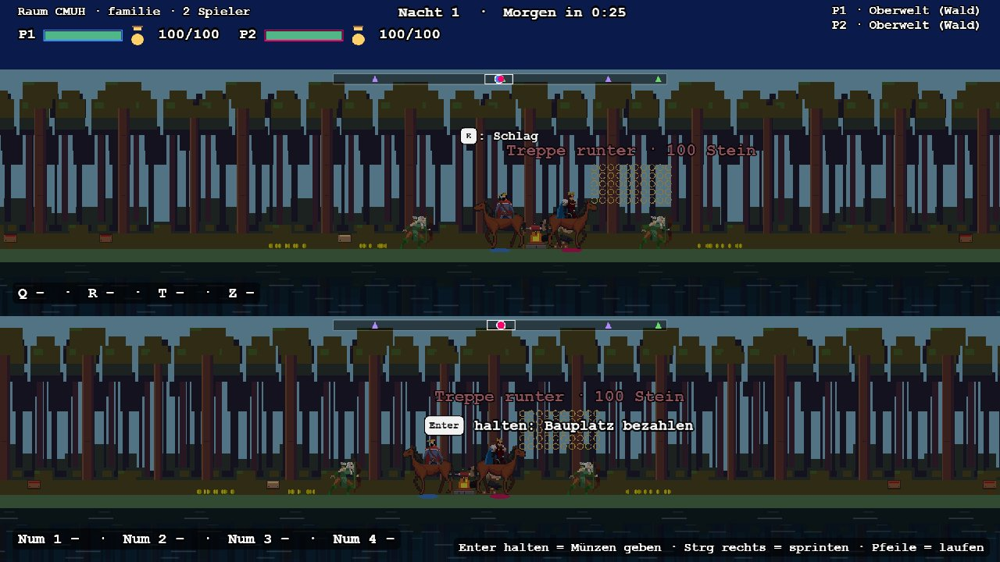
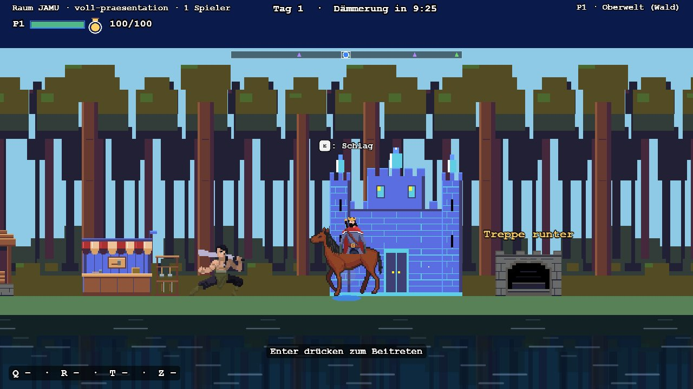
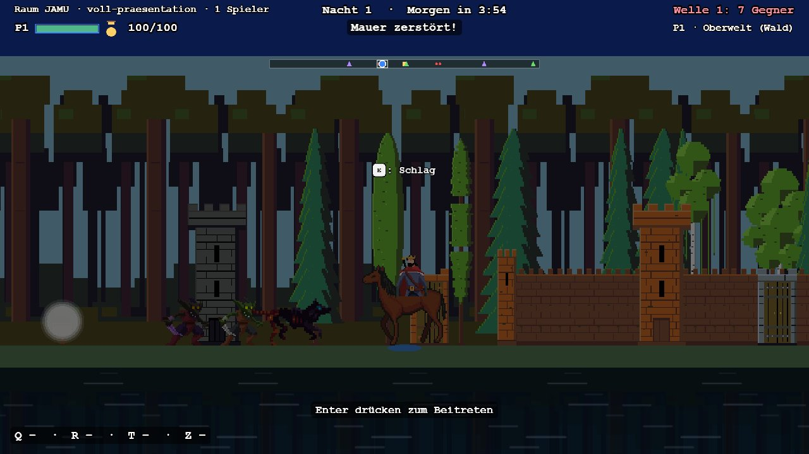

🎮
Couch und Online gemischt
Zwei Controller an der Xbox im Split-Screen, dazu weitere Mitspieler per Handy oder PC. Mitspielen könnt ihr jederzeit: einmal A drücken, fertig.
Couch-Koop-Strategie im Stil von Kingdom Two Crowns. Ihr baut zusammen ein Reich auf, haltet es nachts gegen die Gegnerwellen und geht Stufe für Stufe tiefer in die Erde. Läuft im Browser und auf der Xbox, für die ganze Familie.
Jeder von euch spielt einen eigenen Monarchen. Gold gibt es aus Truhen und von besiegten Gegnern, das Material holen eure Bauern. Wer sein Gold klug ausgibt, überlebt die Nacht.
Echte Bilder aus dem laufenden Spiel, ohne Nachbearbeitung (PG1, B-184).



Zwei Controller an der Xbox im Split-Screen, dazu weitere Mitspieler per Handy oder PC. Mitspielen könnt ihr jederzeit: einmal A drücken, fertig.
Jede Stufe wird aus festen Eckdaten und einem Seed erzeugt. Gleicher Seed, gleiche Welt. Im Spielstand steckt nur der Seed, nicht die ganze Karte.
Oberwelt, Höhle, Mine, Eisenstollen und Kristallhöhle. Jede Stufe hat ihren eigenen Hub. Alle Stufen laufen immer weiter, auch wenn gerade niemand dort ist.
In Kingdom gibt der Monarch nur Befehle. Hier haut er selbst zu und nutzt Skills aus drei Linien (der Dieb folgt später).
Ihr baut euren Hub aus: von Holz über Stein, Kupfer und Eisen bis Kristall. Mit jeder Stufe kommen stärkere Mauern, Türme und neue Gebäude dazu.
Unter Tage gibt es keine Nacht. Dafür füllt sich ein Aggro-Balken: Jeder Kill und jede Ressource heizt ihn an, und bei 100 % greifen die Portale an. Das Tempo bestimmt ihr.
Pro Stufe wartet ein Miniboss, pro Insel ein Endboss. Jede 7. Nacht ist Vollmond und der Alpha-Wolf kommt, jede 13. Nacht ist Blutmond.
Das Asset-Studio läuft als Seite auf dem Server. Dort ordnet ihr Grafik und Sound zu, plant Welten und Chunks, legt fest, welche Gebäude zu welcher Hub-Stufe gehören, und seht euch Figuren in Bewegung an.
Schläge, Treffer, Bauen und Münzen haben jeweils eigene Sounds. Sie stammen aus freien Quellen, und zu jedem lässt sich die Lizenz nachlesen.
Läuft in Edge auf der Xbox und lässt sich komplett mit dem Controller bedienen. Die Schrift ist groß genug für den Abstand vom Sofa.
Die erste Insel hat fünf Stufen, jede ein eigenes Level. Nach unten werden sie schmaler und dichter. Das Baumaterial teilt sich die ganze Insel in einem gemeinsamen Vorrat.
Der Tag dauert 10 Minuten, die Nacht 5. Ihr fällt Holz, baut euer Lager auf und wehrt die ersten Wellen ab.
Hier zählt nicht die Uhr, sondern der Aggro-Balken. Baut Stein ab, bevor die Fledermäuse über eure Mauern fliegen.
Kupferadern geben unbegrenzt her, aber nur langsam. Zombies, Rattenschwärme und Minengeister machen es euch eng.
Eisen ist hier die Beute, aber Lava schadet euch: 5 Schaden pro Sekunde, sobald ihr darin steht. Drei Portale halten euch auf Trab.
Ganz unten liegt der Kristall, den ihr für den letzten Hub-Ausbau braucht. Dafür warten hier Kristallwächter mit Flächenschaden und Schwärme von Splitterwichten.
Skill-Punkte findet ihr gemeinsam, verteilen darf sie jeder für sich. Mischt die Linien nach Lust und Laune, Hybrid-Builds sind ausdrücklich erlaubt. Umskillen kostet nichts, geht aber nur tagsüber an der Burg. Eine vierte Linie, der Dieb, kommt später dazu.
Springen gibt es nicht, ihr lauft nur nach links und rechts. Was an einer Stelle gerade möglich ist, blendet das Spiel direkt dort ein.
| Aktion | Xbox-Controller | Tastatur |
|---|---|---|
| Laufen | Linker Stick | A D |
| Sprinten | RT | Shift |
| Beitreten, Münzen geben (halten) | A | Leertaste |
| Schlag | X | E |
| Skill-Slots 1–4 | LB RB LT ↑ | Q R T Z |
| Skill-Menü | D-Pad ↓ | K |
| Pause und Optionen | Menu | Esc |
| Vollbild | Rechten Stick drücken | F |
Spielen könnt ihr hier nicht. Dafür braucht ihr den eigenen Server im Heimnetz. Wie ihr ihn startet, steht im Quellcode auf GitHub.